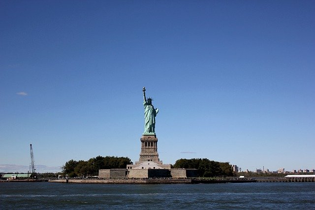
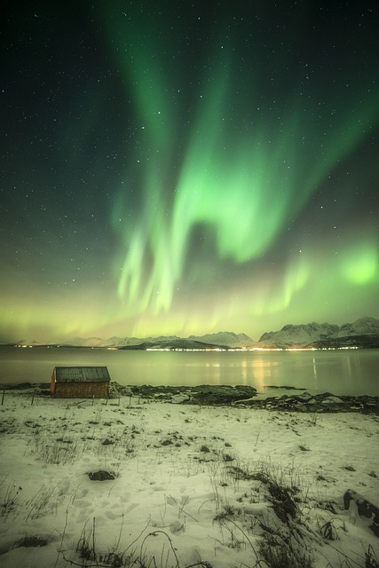

img로 Image넣기
<img src="이미지경로" alt="대체텍스트">
(대체텍스트는 시각장애인용 음성낭독기에서 읽어줄 이미지 설명문.
이미지가 나타나지 않는 상황에서의 설명으로도 적용 됨)
img width/height속성으로 크기 조절

width="400"
height="400"
경로
- 절대경로 - 항상 같은 주소

- 상대경로 - 웹문서의 위치에 따라 달라지는 상대적인 주소
web Image 대표 형식 3가지
- *.gif - 최대 256가지 색상만 표현.
로고나 버튼, 아이콘 등 단순한 그림에 적합. 투명배경 지원. 움짤 가능.
- *.jpg - 트루컬러 표현 가능. 실사 사진에 적합.

- *.png - gif와 jpg형식의 장점을 결합
투명배경 지원. 트루컬러 표현 가능.